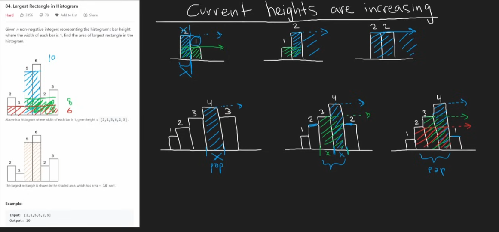

Stack
Stack, Deque
üì¶ Stack (LIFO ‚Äì Last In, First Out)
In python, stack can be simply represented using the list.
stack = []
# Push
stack.append(10)
stack.append(20)
# Pop
top = stack.pop() # 20
# Peek
peek = stack[-1] # 10
# Check if empty
is_empty = len(stack) == 0
üîÅ Deque (Double-Ended Queue)
For more efficient stack/queue operations, use collections.deque:, we can also use it to represent queue (FIFO) directly
from collections import deque
dq = deque()
# Stack operations
dq.append(1) # push to end
val = dq.pop() # pop from end
# Queue operations
dq.appendleft(2) # enqueue to front
val = dq.popleft() # dequeue from front
Both data structures are O(1).
Valid Parentheses
class Solution:
def isValid(self, s: str) -> bool:
# Use Stack
stack = []
for char in s:
# If closing bracket
if stack and char in (')','}',']'):
top = stack.pop()
if top == '(' and char == ')':
continue
elif top == '{' and char == '}':
continue
elif top == '[' and char == ']':
continue
else:
# Not a valid match
return False
stack.append(char)
if stack:
return False
return True
Minimum Stack
class MinStack:
def __init__(self):
self.stack = []
# Keep a record of each value with the min
def push(self, val: int) -> None:
if self.stack:
min_value = self.getMin()
if min_value < val:
self.stack.append((val, min_value))
else:
self.stack.append((val, val))
else:
self.stack.append((val, val))
def pop(self) -> None:
self.stack.pop()
def top(self) -> int:
return self.stack[-1][0]
def getMin(self) -> int:
print(self.stack)
return self.stack[-1][1]
Evaluate Reverse Polish Notation
class Solution:
def evalRPN(self, tokens: List[str]) -> int:
stack = []
for token in tokens:
# assume the stack would always be true when encounter a symbol
if token in ('+', '-', '*', '/'):
right = stack.pop()
left = stack.pop()
if token == '+':
stack.append(int(left) + int(right))
elif token == '-':
stack.append(int(left) - int(right))
elif token == '*':
stack.append(int(left) * int(right))
elif token == '/':
stack.append(int(left) / int(right))
else:
stack.append(token)
return int(stack[-1])
Generate Parentheses
class Solution:
def generateParenthesis(self, n: int) -> List[str]:
# Backtracking with stack
stack = []
res = []
def backtrack(openN, closeN):
if openN == closeN == n:
res.append(''.join(stack))
return
# openN should alwasy be greater than closeN
if openN < n: # 2 conditions
stack.append('(')
backtrack(openN + 1, closeN)
stack.pop()
if closeN < openN:
stack.append(')')
backtrack(openN, closeN + 1)
stack.pop()
backtrack(0, 0)
return res
Daily Temperatures - Monotonic Stack
A monotonic stack or queue is a data structure that maintains its elements in a strictly increasing or decreasing order, allowing efficient access to the next greater or smaller element during traversal or processing. A good link
class Solution:
def dailyTemperatures(self, temperatures: List[int]) -> List[int]:
# Mono stack with the index stored
stack = []
res = [0] * len(temperatures)
for r, temp in enumerate(temperatures):
while stack and temp > stack[-1][0]:
val, l = stack.pop()
res[l] = r - l
stack.append((temp, r))
return res
Car Fleet
class Solution:
def carFleet(self, target: int, position: List[int], speed: List[int]) -> int:
# position = [4,1,0,7], speed = [2,2,1,1]
pos_speed = []
for i in range(len(position)):
pos_speed.append((position[i], speed[i]))
pos_speed.sort(reverse = True)
stack = [] # maintain the number of overlapped fleets
for i in range(len(pos_speed)):
time_take = (target - pos_speed[i][0]) / pos_speed[i][1] # Float
if stack and time_take > stack[-1]: # copmare every element, cuz the stack is in increasing order, so we don't need to worry about the order, always compare with the current largest, if over means a new fleet found
stack.append(time_take)
if i == 0:
stack.append(time_take)
continue
return len(stack)
Largest Rectangle In Histogram
Core idea is that we need to identify use stack for this problem to aim O(n) time.
This algorithm uses a monotonic increasing stack to find the largest rectangle in a histogram by storing (height, index) pairs.
- As you iterate, if the current height is smaller than the height at the top of the stack, you pop from the stack, treating it as the height of a potential rectangle that ends at the current index.
- For each popped bar, you calculate the area using its height and the width from its stored index to the current index.
- After finishing the iteration, you process any remaining bars in the stack as if they extend to the end of the histogram.


class Solution:
def largestRectangleArea(self, heights: List[int]) -> int:
max_area = 0
stack = [] # Keep track of the areas
for r, height in enumerate(heights):
# If the curr height is smaller than previous, pop the stack
curr = r
while stack and height < stack[-1][0]: # pop the bar where height is greater than current bar
l_height, l = stack.pop()
max_area = max(max_area, (curr - l) * l_height) # compute the max area
r = l
stack.append((height, r))
# And also process the end of stack
r = len(heights)
while stack:
l_height, l = stack.pop()
max_area = max(max_area, (r - l) * l_height)
return max_area
Largest Square In Histogram
Got this question in the code signal Q4, the question is basically asking finding the largest square similar to the previous one. And the only difference would be we need to add a constraint this time which we can only choose the minimum(width, height) to calculate the square.
class Solution:
def largestRectangleArea(self, heights: List[int]) -> int:
max_area = 0
stack = [] # (height, index)
for r, height in enumerate(heights):
curr = r
while stack and height < stack[-1][0]:
l_height, l = stack.pop()
width = curr - l
side = min(l_height, width) # side of the square
max_area = max(max_area, side * side)
r = l # reuse previous left boundary
stack.append((height, r))
r = len(heights)
while stack:
l_height, l = stack.pop()
width = r - l
side = min(l_height, width)
max_area = max(max_area, side * side)
return max_area
Summary
üßæ Stack, Deque, and Monotonic Stack/Queue Summary
| Structure | Purpose | Python Implementation | Common Ops (Time) | Notes |
|---|---|---|---|---|
| Stack | LIFO (Last In First Out) | list or collections.deque |
append(), pop() – O(1) |
Use list for simple stacks; prefer deque for large/modifying stacks |
| Deque | Double-ended queue | collections.deque |
append(), appendleft(), pop(), popleft() – O(1) |
Efficient at both ends; good for queues, sliding windows |
| Monotonic Stack | Maintain increasing/decreasing order | list |
Custom push/pop logic | Used in next greater/smaller element problems |
| Monotonic Queue | Maintain increasing/decreasing order | deque |
Custom append/pop logic | Often used in sliding window maximum/minimum problems |